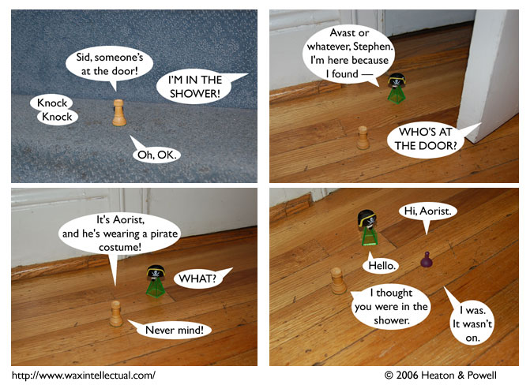

Strip #9
— Monday, July 3, 2006
Aorist’s heart isn’t really in the whole pirate slang thing, but at least he’s trying.
Notes, Thoughts, &c.
Ben’s Notes
This is the first comic with a sound effect, and the second comic with a character speaking from off-panel. I’m hoping the high number of nonstandard speech bubbles won’t make this too confusing.
Lewis’s Notes
With the exception of Omicron, we have now introduced the main cast. I hope that at this point, you are starting to get some sense of who these characters are. Especially Sid and Stephen. Ideally, our fan base will split off into two factions, the Siddites and the Stephonians; based on who they identify strongly with and/or want to see victorious in the current grocery struggle.
I would also like to say “Happy Birthday Ben”, as it is his Birthday.